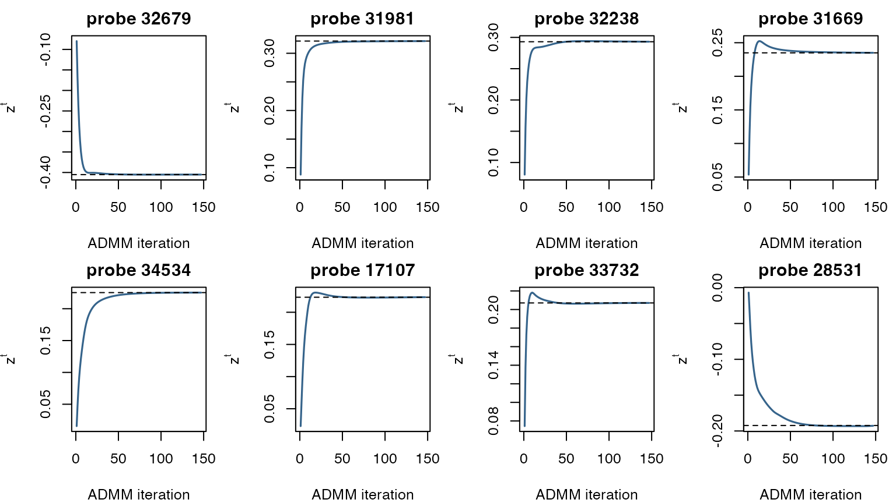

Federated Cox-Lasso via Consensus ADMM on DLBCL (Threshold CKKS)
Balasubramanian Narasimhan
2026-08-06
Source:vignettes/cvxr-cox-lasso-dlbcl.Rmd
cvxr-cox-lasso-dlbcl.RmdIntroduction
The companion vignette Federated Consensus ADMM develops the threshold-FHE consensus-ADMM protocol on a small simulated L2-regularized logistic problem (, three sites). This vignette takes the same protocol to a real, high-dimensional survival problem: a stratified Cox lasso on the diffuse large-B-cell lymphoma (DLBCL) gene-expression cohort of Rosenwald et al. (2002), the dataset Bayle et al. (2025) use to motivate distributed Cox estimation.
The lesson is the same as in the cox and
cox-threshold vignettes — function-call optimizers
such as mle() or coxph()’s Newton-Raphson
compose with an encrypted master/worker round without the optimizer
noticing — but it does not extend to arbitrary convex programs. CVXR operates on a symbolic
problem: it canonicalizes once and ships the canonical form to a solver,
so we cannot hand it a callback that secretly performs FHE. The remedy
is federated consensus ADMM (Boyd, Parikh, Chu, Peleato
and Eckstein, 2011): split the global problem into per-site subproblems
each solved by CVXR in the clear,
and use the encrypted channel only for the cross-site consensus
average. Disciplined parametric programming (DPP) keeps the
per-site solves fast because the Parameter values change
every iteration but the symbolic structure does not.
We develop the fit in two passes. First we run the whole thing in the clear to fix the target: standardize, screen, and solve the consensus ADMM with an ordinary plaintext average, checking against the centralized CVXR solve. Then we put it under threshold FHE, replacing each cross-site sum — the standardization moments, the screening statistics, and the per-iteration consensus average — with one round of the encrypted-summation primitive, and confirm the encrypted fit reproduces the plaintext reference.
Reproducibility and verification. The code chunks in this vignette are the pipeline; they are gated
eval = RECOMPUTEand do not run when the vignette builds (the encrypted ADMM takes ~150 iterations of per-site CVXR solves). The displayed numbers come fromdata(cvxr_consensus), which was produced by extracting these very chunks withknitr::purl()and running them. To verify the results, do exactly that yourself:vig <- system.file("doc", "cvxr-cox-lasso-dlbcl.Rmd", package = "homomorpheR") RECOMPUTE <- TRUE # un-gate the chunks src <- knitr::purl(vig, output = tempfile(fileext = ".R"), quiet = TRUE) source(src) # runs the pipeline (minutes) fresh <- cvxr_consensus # just recomputed data(cvxr_consensus, package = "homomorpheR") # the shipped copy max(abs(fresh$z_enc - cvxr_consensus$z_enc)) # ~1e-7Threshold key generation is randomized, so a re-run reproduces the shipped coefficients up to CKKS approximation noise (~1e-7), not bit-for-bit. This
purl()-then-source()is exactly whatdata-raw/cvxr_consensus.Rdoes to build the shipped object.
The global problem and its consensus split
The three molecular subgroups (GCB, ABC, Type III) are our sites: they arise from different cells of origin, have systematically different prognosis, and are diagnosed at different referral centers, so the subgroup is a biologically and operationally realistic site boundary. With sites, per-site standardized design matrices , event times , status , a shared coefficient , and the per-stratum Cox partial log-likelihood in Breslow form, the global problem is
Because the partial likelihood factorizes additively across strata, the consensus split introduces per-site copies and a global consensus :
with augmented-Lagrangian iteration
where is soft-thresholding (the proximal map of ). The -update is the per-site CVXR solve; the -update needs the cross-site average — that average is the only quantity that traverses the encrypted channel; the soft-threshold is closed-form at the aggregator and adds no cryptographic depth.
The pipeline needs survival and CVXR alongside the encryption
packages.
The federated fit in the clear
The three subgroups are our sites. We load the cohort, split it by subgroup, and keep each site’s raw expression matrix, event times, and status.
data(DLBCL, package = "homomorpheR") # 235 patients: survival + signatures
data(DLBCL_gex, package = "homomorpheR") # 235 patients x 6416 Lymphochip probes
dlbcl <- DLBCL
dlbcl$Subgroup <- factor(dlbcl$Subgroup, levels = c("GCB","ABC","Type III"))
stopifnot(identical(as.character(dlbcl$ID), rownames(DLBCL_gex))) # rows aligned
sites_raw <- lapply(levels(dlbcl$Subgroup), function(s) {
idx <- which(dlbcl$Subgroup == s)
list(name = s, X = DLBCL_gex[idx, ], time = dlbcl$time[idx],
status = dlbcl$status[idx])
})
names(sites_raw) <- levels(dlbcl$Subgroup)
N_sites <- length(sites_raw)
N_total <- sum(vapply(sites_raw, function(s) nrow(s$X), 1L))
P_raw <- ncol(DLBCL_gex)We standardize the features so the L1 penalty applies uniformly
across predictors on different scales. The pooled mean and variance are
additive over sites: site
contributes
and
,
from which
and
.
In the clear this is a pair of colSums.
pool_plain <- function(sites, n_total) {
s <- Reduce(`+`, lapply(sites, function(s) colSums(s$X)))
q <- Reduce(`+`, lapply(sites, function(s) colSums(s$X^2)))
mu <- s / n_total
sigma2 <- pmax(q / n_total - mu^2, .Machine$double.eps)
list(mu = mu, sigma = sqrt(sigma2))
}
pool <- pool_plain(sites_raw, N_total)
sites_std <- lapply(sites_raw, function(s) list(
name = s$name,
X = sweep(sweep(s$X, 2, pool$mu, "-"), 2, pool$sigma, "/"),
time = s$time, status = s$status))Solving the full Cox-lasso at exhausts memory during CVXR canonicalization, so we pre-screen to the probes with the strongest univariate association with survival — the screen-then-fit pattern Bayle et al. (2025) use on this cohort. For probe on stratum in event-time order with risk set at event , is the score and the information; both sum across sites, and the screen ranks probes by .
K <- 100L
score_info_at_zero <- function(X, time, status) {
p <- ncol(X)
ord <- order(time, -status)
X_o <- X[ord, , drop = FALSE]; stat_o <- status[ord]
n <- nrow(X_o); U <- numeric(p); I <- numeric(p)
for (i in seq_len(n)) {
if (stat_o[i] == 1L) {
risk <- X_o[i:n, , drop = FALSE]
mu_R <- colMeans(risk)
U <- U + (X_o[i, ] - mu_R)
I <- I + colSums(sweep(risk, 2, mu_R, "-")^2) / nrow(risk)
}
}
list(U = U, I = I)
}
screen_plain <- function(sites, K) {
UI <- lapply(sites, function(s) score_info_at_zero(s$X, s$time, s$status))
U <- Reduce(`+`, lapply(UI, `[[`, "U"))
I <- Reduce(`+`, lapply(UI, `[[`, "I"))
Z <- U / sqrt(pmax(I, .Machine$double.eps))
order(abs(Z), decreasing = TRUE)[seq_len(K)]
}
top_idx <- screen_plain(sites_std, K)
sites_KS <- lapply(sites_std, function(s) list(
name = s$name, X = s$X[, top_idx],
time = s$time, status = s$status))
sigma_K <- pool$sigma[top_idx]sites_KS now holds each stratum on the
screened probes, and sigma_K keeps their pooled SDs for the
back-transform to the original gene-expression scale.
The centralized stratified Cox-lasso fit — our ground truth — is a single CVXR solve summing the per-stratum Breslow partial likelihoods plus the L1 penalty.
LAMBDA <- 5
build_cox_breslow_nll <- function(beta_var, X_s, time_s, status_s) {
ord <- order(time_s, -status_s)
X_o <- X_s[ord, , drop = FALSE]; stat_o <- status_s[ord]
n <- nrow(X_o); eta_o <- X_o %*% beta_var
terms <- list()
for (i in seq_len(n)) {
if (stat_o[i] == 1L) {
terms[[length(terms) + 1L]] <-
log_sum_exp(eta_o[i:n, 1]) - eta_o[i, 1]
}
}
Reduce(`+`, terms)
}
beta_var <- Variable(K, name = "beta")
nll_per <- lapply(sites_KS, function(s)
build_cox_breslow_nll(beta_var, s$X, s$time, s$status))
agg_prob <- Problem(Minimize(Reduce(`+`, nll_per) +
LAMBDA * p_norm(beta_var, 1)))
suppressMessages(suppressWarnings(
psolve(agg_prob, solver = "CLARABEL", verbose = FALSE)))
agg_beta <- as.numeric(value(beta_var))The distributed fit splits this objective into per-site subproblems
tied by a consensus variable. Each local problem is built so DPP
applies:
and
enter as Parameters whose values change every ADMM
iteration while the symbolic structure does not;
,
time, status, and
are constants.
RHO <- 50
build_local <- function(X_k, time_k, status_k, rho) {
p <- ncol(X_k)
x <- Variable(p); zp <- Parameter(p); up <- Parameter(p)
nll <- build_cox_breslow_nll(x, X_k, time_k, status_k)
aug <- (rho / 2) * sum_squares(x - zp + up)
list(prob = Problem(Minimize(nll + aug)), x = x, zp = zp, up = up)
}
sites_problem <- lapply(sites_KS, function(s)
build_local(s$X, s$time, s$status, RHO))The ADMM driver below is the whole federated algorithm, and it is
deliberately agnostic to how the cross-site average is formed:
the consensus argument is a function of the per-site
vectors, and everything else — the local CVXR solves, the soft-threshold
-update,
the dual update, the stopping rule — is ordinary R. We call it once now
with a plaintext average and, unchanged, once more under encryption.
A note on the constants. We fix
and a cap of 200 iterations. The dual residual
is the binding term here and decays slowly; with
the absolute stopping rule
primal < TOL && dual < TOL (with
TOL = 0.005) trips at iteration 147. Smaller
reaches the tolerance in fewer iterations but at a looser fit, so we
keep
for the tightest agreement with the centralized solve.
MAX_ITER <- 200L; TOL <- 5e-3
soft_threshold <- function(v, tau) sign(v) * pmax(abs(v) - tau, 0)
run_admm <- function(sites_problem, consensus) {
site_x <- replicate(N_sites, rep(0, K), simplify = FALSE)
site_u <- replicate(N_sites, rep(0, K), simplify = FALSE)
z_curr <- rep(0, K); trajectory <- list()
for (iter in seq_len(MAX_ITER)) {
for (i in seq_len(N_sites)) {
value(sites_problem[[i]]$zp) <- z_curr
value(sites_problem[[i]]$up) <- site_u[[i]]
suppressMessages(suppressWarnings(
psolve(sites_problem[[i]]$prob, solver = "CLARABEL",
verbose = FALSE)))
site_x[[i]] <- as.numeric(value(sites_problem[[i]]$x))
}
w_avg <- consensus(site_x, site_u)
z_new <- soft_threshold(w_avg, LAMBDA / (N_sites * RHO))
site_u <- Map(function(u, x) u + (x - z_new), site_u, site_x)
primal <- sqrt(mean(vapply(site_x, function(x) sum((x - z_new)^2), 0)))
dual <- RHO * sqrt(sum((z_new - z_curr)^2))
z_curr <- z_new; trajectory[[iter]] <- z_new
if (primal < TOL && dual < TOL) break
}
list(z = z_curr, trajectory = trajectory)
}
plain_consensus <- function(site_x, site_u)
Reduce(`+`, Map(`+`, site_x, site_u)) / length(site_x)
ref <- run_admm(sites_problem, plain_consensus)
z_ref <- ref$zIn the clear the consensus is a single line — the average of the
vectors. The plaintext ADMM converges in 147 iterations and matches the
centralized CVXR fit to 8.3^{-4} in
maximum absolute coefficient difference, so agg_beta —
equivalently z_ref — is the target the encrypted protocol
must reproduce.
The same fit under threshold FHE
Only three quantities ever cross a site boundary: the standardization
moments
,
the screening statistics
,
and, at each ADMM iteration, the consensus sum
.
Each is a sum over sites, so each becomes one round of the same
threshold-FHE summation primitive the master/worker fits use: every site
encrypts its contribution under the joint public key, the aggregator
adds the ciphertexts, and the total is recovered by
-of-
partial decryption. The local CVXR
work and run_admm are untouched.
We use the same threshold infrastructure as
cox-threshold.Rmd: a CKKS context with
Feature$MULTIPARTY and
make_threshold_master(), which runs the chained
multiparty_key_gen() ceremony internally so no single party
ever holds the secret key.
cc <- fhe_context("CKKS",
multiplicative_depth = 1L,
scaling_mod_size = 59L,
first_mod_size = 60L,
batch_size = 8192L,
features = c(Feature$MULTIPARTY))
master <- make_threshold_master("Aggregator",
crypto_context = cc, n_sites = N_sites)The standardization round is pool_plain with the two
colSums encrypted: each site encrypts
and
,
the aggregator sums under encryption and threshold-decrypts the pooled
moments. (For brevity we treat
as known to the aggregator; hiding the per-site head-counts is one more
sum of the same kind.)
encrypt_pool <- function(master, sites, n_total, p_raw) {
s_ct <- lapply(sites, function(s) master_encrypt(master, colSums(s$X)))
q_ct <- lapply(sites, function(s) master_encrypt(master, colSums(s$X^2)))
pooled_sum <- master_decrypt(master, Reduce(`+`, s_ct), len = p_raw)
pooled_sumsq <- master_decrypt(master, Reduce(`+`, q_ct), len = p_raw)
mu <- pooled_sum / n_total
sigma2 <- pmax(pooled_sumsq / n_total - mu^2, .Machine$double.eps)
list(mu = mu, sigma = sqrt(sigma2))
}
fhe_pool <- encrypt_pool(master, sites_raw, N_total, P_raw)The encrypted moments agree with the plaintext pool to
4.4^{-16} (mean) and 3.1^{-15} (SD) — essentially machine precision,
since these are exact sums under CKKS. The screening round is
structurally identical, the same score_info_at_zero
summands
encrypted and summed the same way, so we show it compactly and confirm
it selects the same probes.
encrypt_screen <- function(master, sites, p_raw, K) {
enc <- function(v) master_encrypt(master, v)
UI <- lapply(sites, function(s) score_info_at_zero(s$X, s$time, s$status))
U <- master_decrypt(master, Reduce(`+`, lapply(UI, function(z) enc(z$U))),
len = p_raw)
I <- master_decrypt(master, Reduce(`+`, lapply(UI, function(z) enc(z$I))),
len = p_raw)
Z <- U / sqrt(pmax(I, .Machine$double.eps))
order(abs(Z), decreasing = TRUE)[seq_len(K)]
}
fhe_top <- encrypt_screen(master, sites_std, P_raw, K)
stopifnot(setequal(fhe_top, top_idx)) # same probes as the plaintext screenWith standardization and screening recovering the same design, the
consensus round is the only piece left to encrypt. It mirrors
plain_consensus: encrypt each
,
sum the ciphertexts, scale by
under encryption (one ciphertext-plaintext multiply, depth 1), and
threshold-decrypt the
length-
average. Soft-thresholding stays in the clear at the aggregator.
encrypted_consensus <- function(site_x, site_u) {
cts <- lapply(seq_along(site_x), function(i)
master_encrypt(master, site_x[[i]] + site_u[[i]]))
ct_avg <- Reduce(`+`, cts) * (1 / length(site_x))
master_decrypt(master, ct_avg, len = K)
}
fhe <- run_admm(sites_problem, encrypted_consensus)
z_curr <- fhe$z
trajectory <- fhe$trajectoryPassing encrypted_consensus in place of
plain_consensus is the entire change. The
encrypted ADMM ran for 147 iterations and lands on the same coefficients
as the plaintext run, differing by only 1.4^{-7} — the CKKS
approximation noise.
Comparison with the centralized fit
We compare the threshold-FHE consensus to the centralized CVXR fit on both the standardized scale (where ADMM lives) and the back-transformed original gene-expression scale.
beta_orig_agg <- agg_beta / sigma_K
beta_orig_enc <- z_enc / sigma_K
cmp <- data.frame(
check.names = FALSE,
Scale = c("standardized", "original"),
`Max abs diff` = c(max(abs(z_enc - agg_beta)),
max(abs(beta_orig_enc - beta_orig_agg))),
`L1 diff` = c(sum(abs(z_enc - agg_beta)),
sum(abs(beta_orig_enc - beta_orig_agg))))
knitr::kable(cmp, digits = 4,
caption = "Threshold-FHE consensus ADMM vs. centralized Cox-lasso")| Scale | Max abs diff | L1 diff |
|---|---|---|
| standardized | 0.0008 | 0.0043 |
| original | 0.0016 | 0.0071 |
n_agg <- sum(abs(agg_beta) > 1e-7)
n_enc <- sum(abs(z_enc) > 1e-7)
n_inter <- sum((abs(agg_beta) > 1e-7) & (abs(z_enc) > 1e-7))The active set has 38 nonzero coefficients in the centralized fit and 38 in the encrypted ADMM fit; the intersection is 38 — every probe selected by the centralized fit is recovered by the encrypted distributed protocol.
The figure below shows the consensus trajectory for the eight probes with largest at convergence, with the centralized fit drawn as a horizontal reference. The encrypted iterates converge along the path the centralized solver would take.
top8 <- order(-abs(z_enc))[1:8]
labs <- paste("probe", colnames(DLBCL_gex)[top_idx][top8])
op <- par(mfrow = c(2, 4), mar = c(4, 4, 2, 1), cex = 0.8)
for (j in seq_along(top8)) {
vals <- vapply(trajectory, function(z) z[top8[j]], numeric(1))
plot(seq_along(vals), vals, type = "l", lwd = 1.6, col = "steelblue4",
xlab = "ADMM iteration", ylab = expression(z^t), main = labs[j])
abline(h = agg_beta[top8[j]], lty = 2)
}
Consensus trajectories for the eight largest-magnitude coefficients. Solid lines are the encrypted ADMM iterates; dashed lines are the centralized CVXR fit. Standardized scale.
par(op)What the protocol hides and reveals
The aggregator learns the pooled per-probe mean and SD (round 1), a per-probe stratified univariate Cox statistic and the indices of the top-100 screened probes (round 2), and the consensus at every ADMM iteration. Each is an aggregated population-level statistic over 235 patients, not patient-level data. None of the per-site design matrices , the per-site contributions, the per-site contributions, or the per-site vectors ever appear in cleartext anywhere in the protocol. Decryption at every step is -of- threshold: no single party — the aggregator included — can recover any intermediate quantity unilaterally.
Discussion
-
CVXR symbolic problems compose with threshold FHE.
The local Cox-lasso solve runs in the clear at each site; only the
cross-site consensus update goes through the encrypted channel. The
reader does not rewrite their CVXR
model for the encrypted setting — the same
Problem(Minimize(...))is used verbatim, andrun_admmis called withencrypted_consensusinstead ofplain_consensus. - The encrypted layer is lossless to working precision. The encrypted fit reproduces the plaintext ADMM to 1.4^{-7} and recovers the identical active set; the residual gap to the one-shot centralized solve (8.3^{-4}) is the ADMM iteration budget, not the cryptography.
-
No single party holds the secret key.
make_threshold_master()distributes the secret across all sites; encrypted intermediates are undecryptable by any one party, and each round’s result appears only after -of- partial-decryption fusion. -
DPP keeps the inner loop fast. Each site’s CVXR problem is built once at setup;
ADMM iterations only update the
Parametervalues.
Limitations
- Honest-but-curious trust. A site that misreports its local can corrupt the consensus; detecting this needs commitments / zero-knowledge proofs not implemented here.
- The aggregator sees the trajectory . Per-iteration consensus values are revealed in plaintext (after fusion) so the loop can decide convergence.
- No output privacy. The released is the same coefficient vector as the centralized fit; output-level protection is out of scope here and is demonstrated in the companion DP vignette.